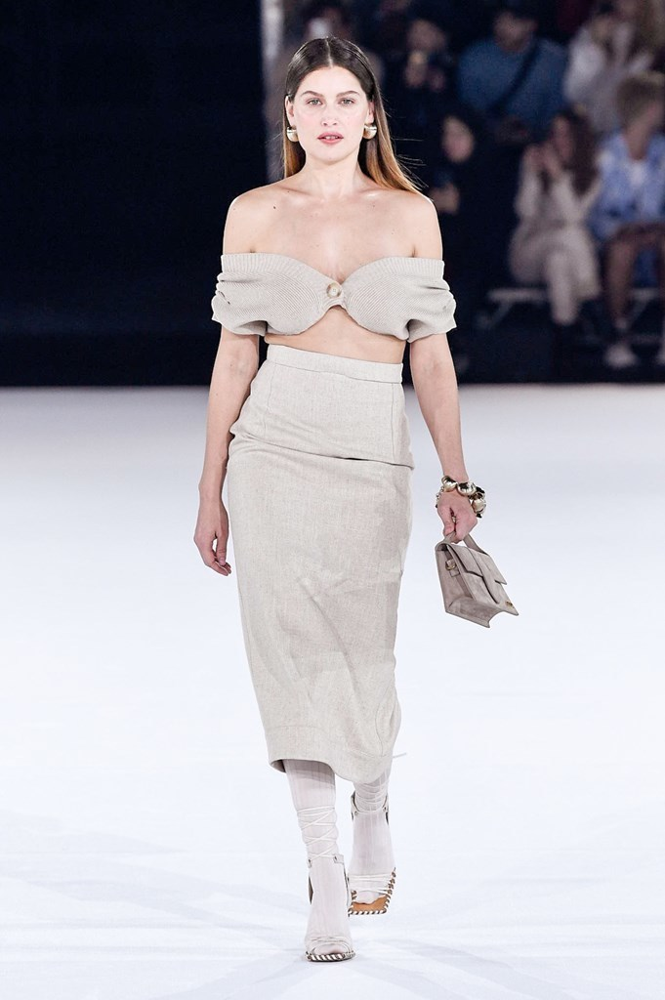
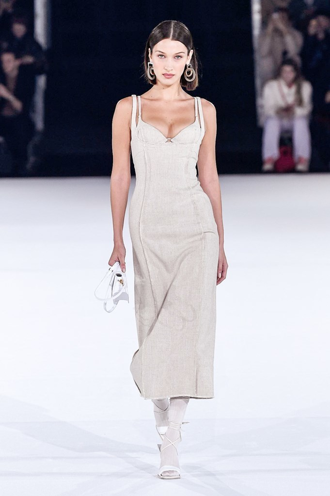
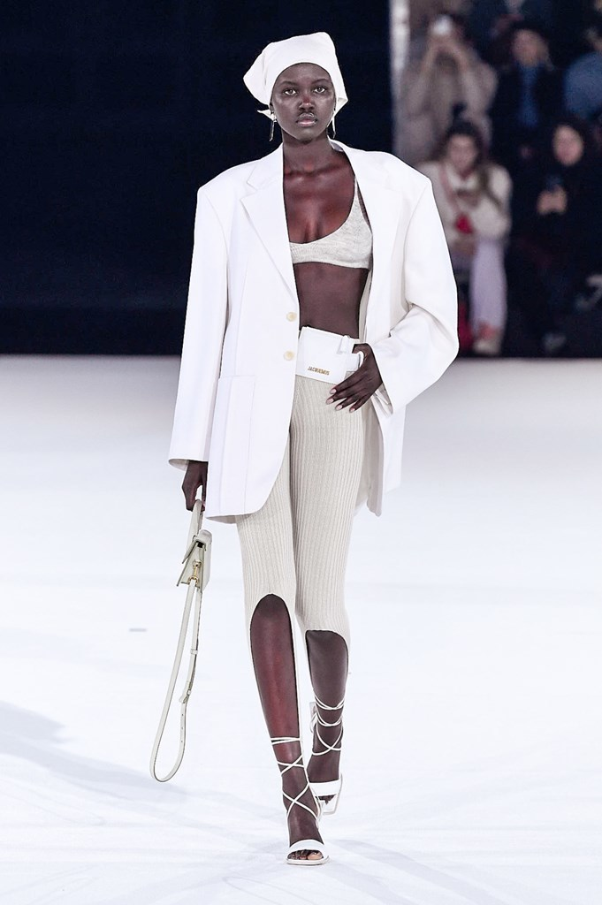
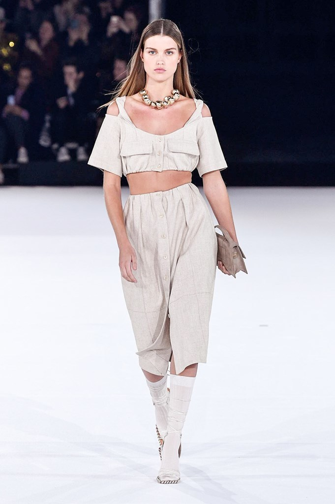
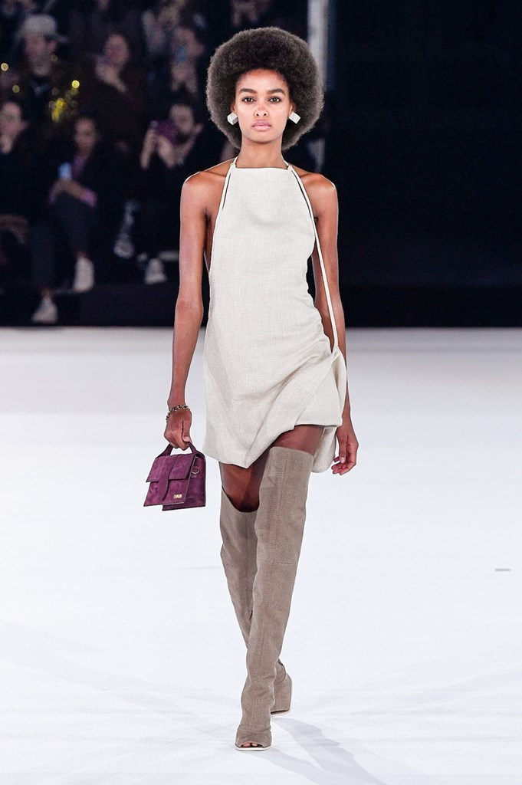
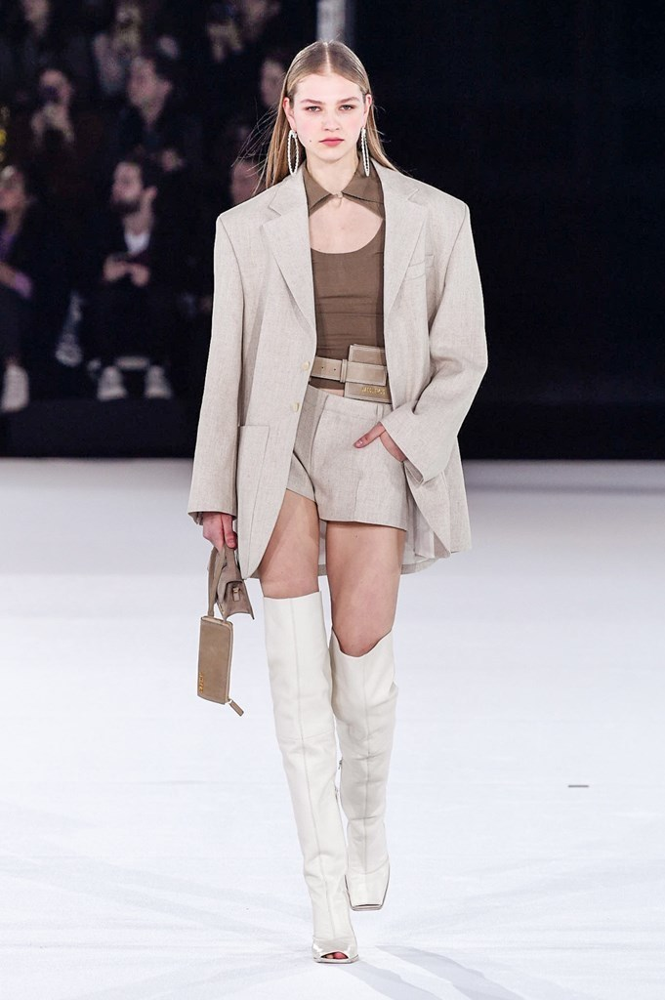
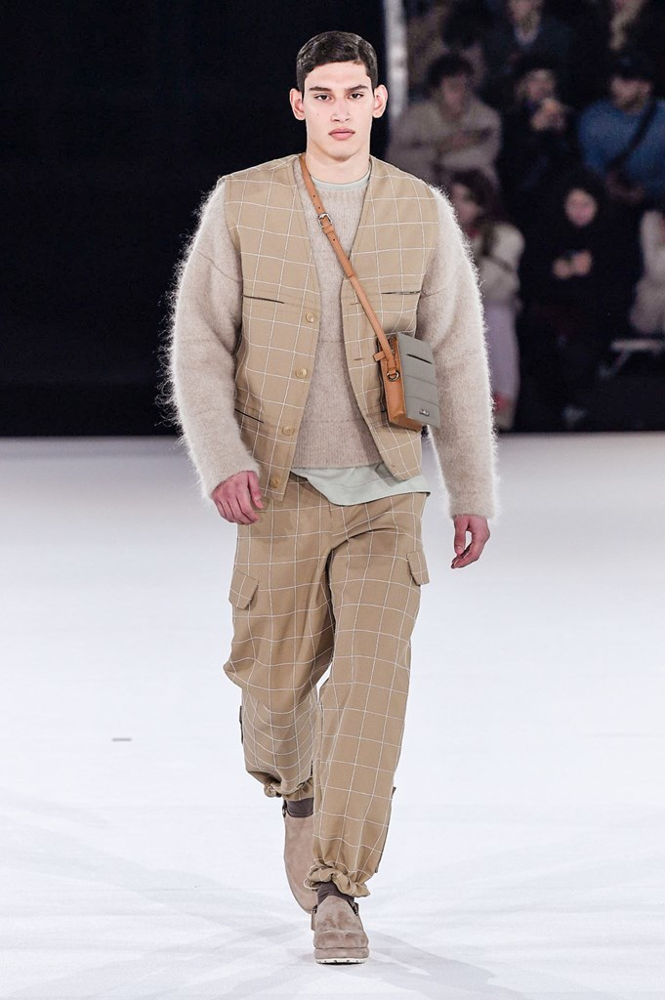
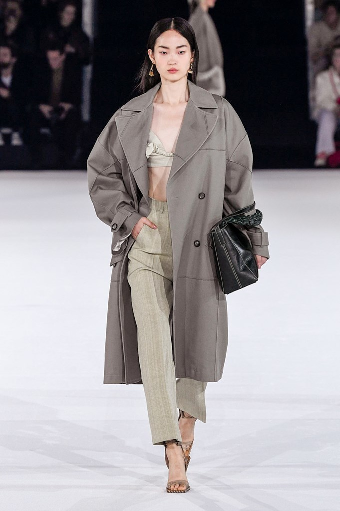
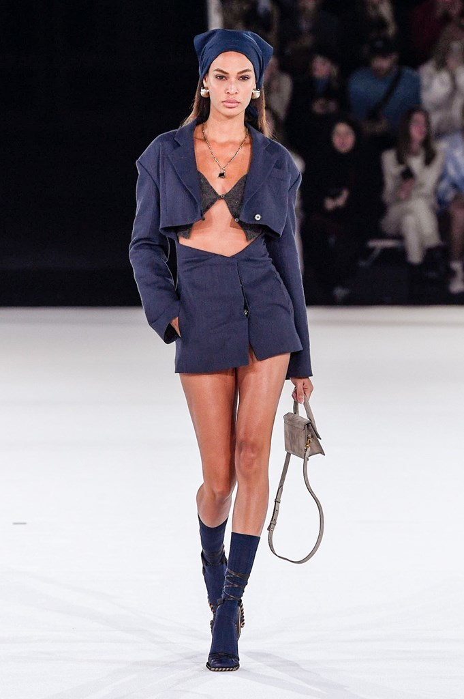
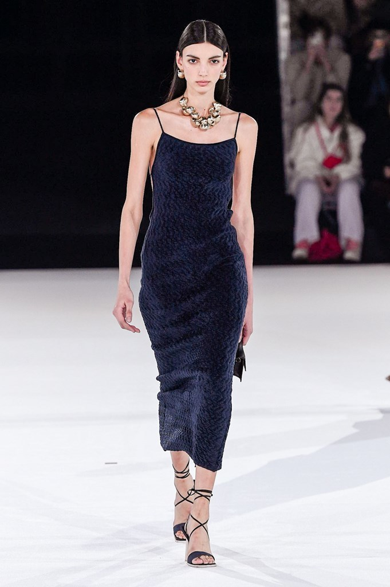

beautifully constructed neutral pieces for men and women
"I was seven when I made a skirt out of a curtain
for my mother, and she brought me to school wearing it," -Jacquemus
“we must remain positive; we’ve been a sunny brand from the start
and we continue to be so, despite the crisis we continue to exist,
to survive, to celebrate.” - Jacquemus
Chic, contemporary minimalism
hues like natural stone, khaki, grey and lavender to
bolder tones of hot pink